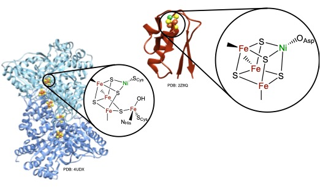

The nickel–iron carbon monoxide dehydrogenase (CODH) enzyme uses a heterometallic nickel–iron– sulfur ([NiFe4S4]) cluster to catalyze the reversible interconversion of carbon dioxide (CO2) and carbon monoxide (CO). These reactions are essential for maintaining the global carbon cycle and offer a route towards sustainable greenhouse gas conversion but have not been successfully replicated in synthetic models, in part due to a poor understanding of the natural system. Though the general protein architecture of CODH is known, the electronic structure of the active site is not well-understood, and the mechanism of catalysis remains unresolved. To better understand the CODH enzyme, we have developed a protein-based model containing a heterometallic [NiFe3S4] cluster in the Pyrococcus furiosus (Pf) ferredoxin (Fd). This model binds small molecules such as carbon monoxide and cyanide, analogous to CODH. Multiple redox- and ligand-bound states of [NiFe3S4] Fd (NiFd) have been investigated using a suite of spectroscopic techniques, including resonance Raman, Ni and Fe K-edge Xray absorption spectroscopy, and electron paramagnetic resonance, to resolve charge and spin delocalization across the cluster, site-specific electron density, and ligand activation. The facile movement of charge through the cluster highlights the fluidity of electron density within iron–sulfur clusters and suggests an electronic basis by which CN− inhibits the native system while the CO-bound state continues to elude isolation in CODH. The detailed characterization of isolable states that are accessible in our CODH model system provides valuable insight into unresolved enzymatic intermediates and offers design principles towards developing functional mimics of CODH.
